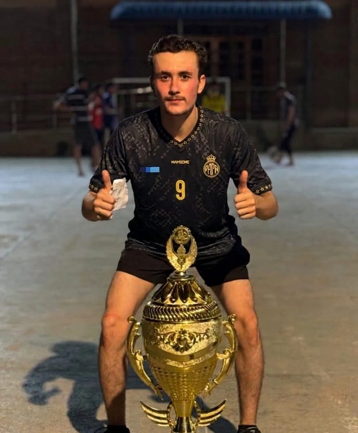
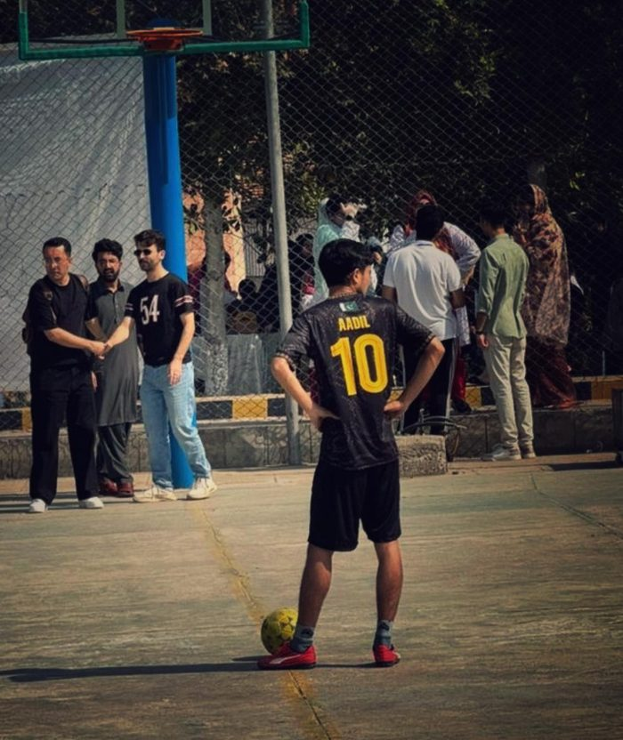
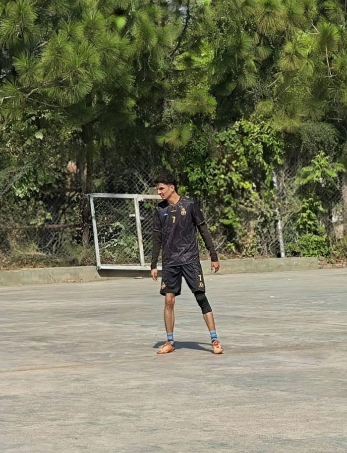
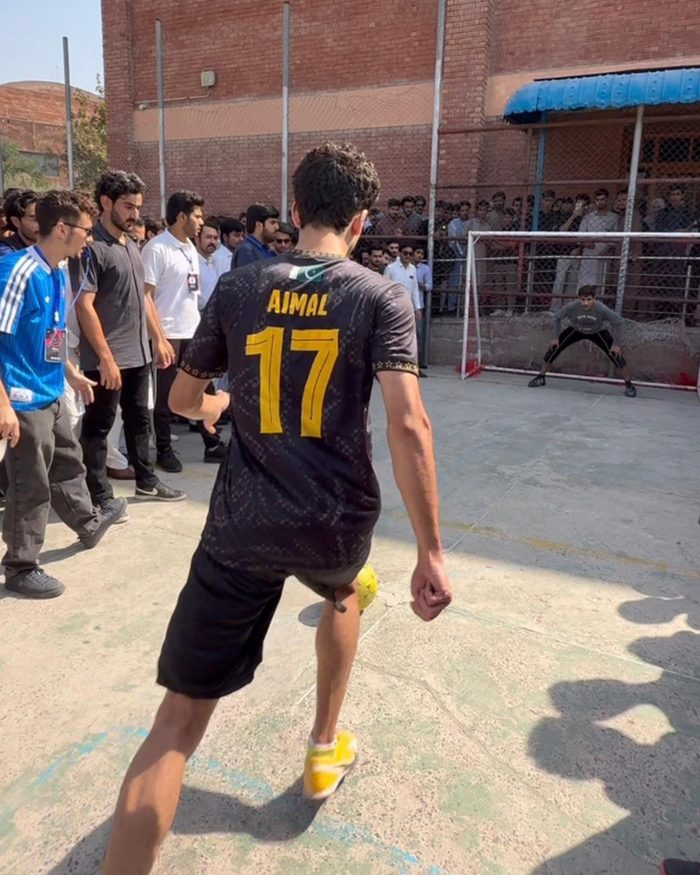
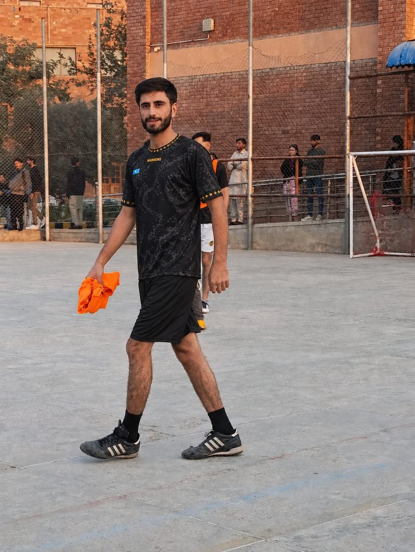
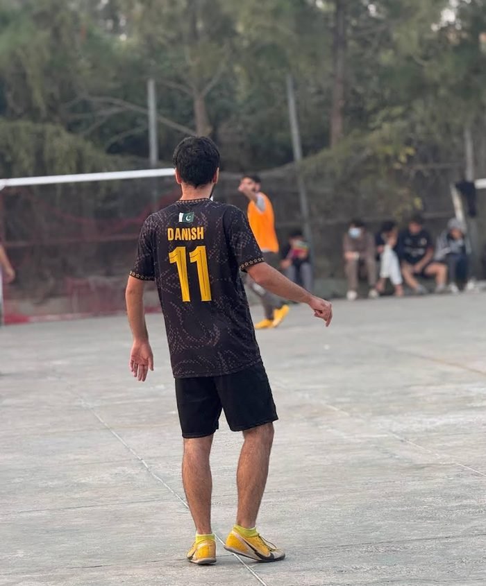
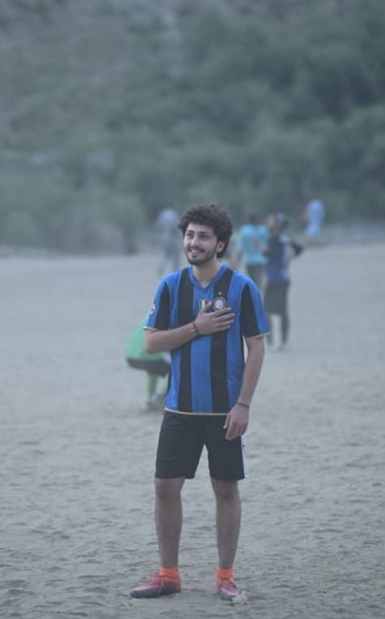
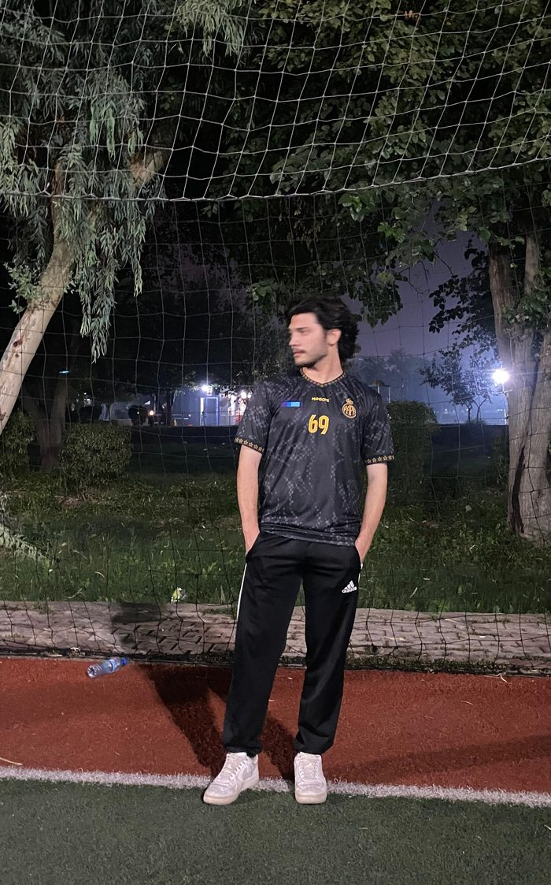
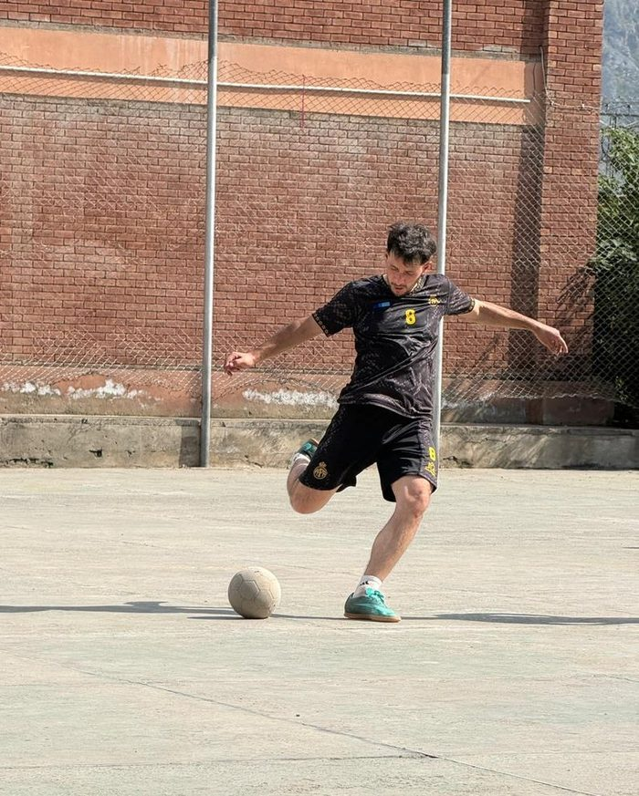
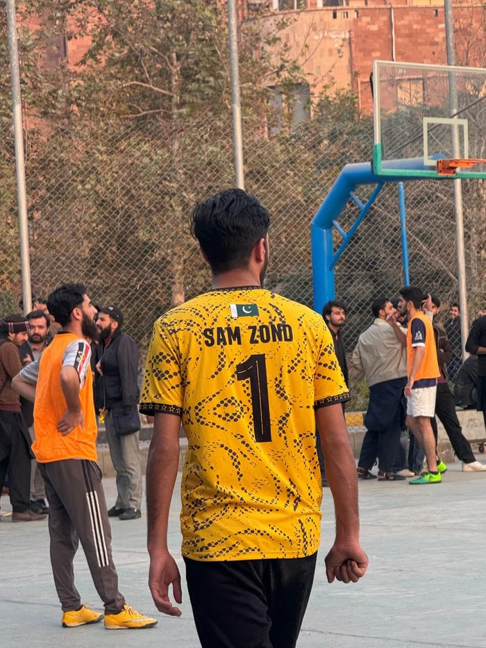

Farhan AzizForward · President
Loved · Despised · Never Ignored
Est. 2025 · Peshawar, Pakistan
01 · The Club
Papa Perez FC is a football club based at the Institute of Management Sciences (IMSciences) in Peshawar, Pakistan, founded in 2025 by Aadil Kamal Khan. Also known as the Home of Absolute Football, it is more than just a club; it is a movement forged in passion and purpose, and a symbol of pure, uncompromising football values.
Here, unity is unbreakable, discipline is non-negotiable, and respect for the game runs through every heartbeat. Every player fights for the badge, every moment is earned, and every victory is shared.
Papa Perez FC is where passion meets pride, where brotherhood is built on the pitch, and where the game is played the way it was meant to be—fearless, honest, and absolute.
No one is bigger than the club.
02 · The Squad










03 · Quick Answers
Papa Perez FC, also known as the Home of Absolute Football, is a football club based at the Institute of Management Sciences (IMSciences) in Peshawar, Pakistan. It was founded in 2025.
The club is based at IMSciences in Peshawar, Khyber Pakhtunkhwa, Pakistan. Its home ground is Aadil's Arena at IMSciences.
Farhan Aziz has been president since 2026. He also plays as a forward, wearing number 9.
The slogan is "Loved, Despised, Never Ignored", and the club's guiding principle is "No one is bigger than the club."
04 · Get in Touch